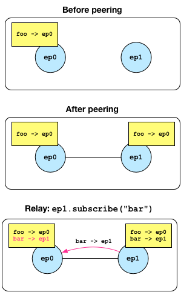
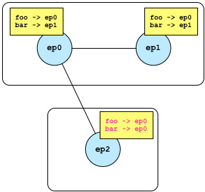

Broker’s primary objective is to facilitate efficient communication through a publish/subscribe model. In this model, entities send data by publishing to a specific topic, and receive data by subscribing to a topic of interest. The asynchronous nature of publish/subscribe makes it a popular choice for loosely coupled, distributed systems.
Broker is the successor of Broccoli, Bro’s client communications library. Broccoli enables arbitrary applications to communicate in Bro’s data model.
Broker encapsulates its entire state in a context object. Multiple
instances of a context can exist in the same process, but each context
features a thread-pool and (configurable) scheduler, which determines the
execution of Broker’s components. Using a single context per OS process
guarantees the most efficient usage of available hardware resources.
Nonetheless, multiple Broker applications can seamlessly operate when linked
together, as there exists no global library state.
A context can spawn endpoint instances, of which there exists a
blocking and non-blocking variant. The two types differ in the way they
manage their subscriptions and receive messages. Both variants have a
mailbox, which is essentially a queue with its unprocessed messages. In the
blocking case, the user manually extracts messages from the mailbox, whereas
the Broker runtime dispatches messages asynchronously in the non-blocking case.
Both endpoint variants can be mixed and matched, it is not necessary to commit to a particular type for all endpoints within a context.
Note
Instances of type endpoint have reference semantics: that is, they behave
like a reference in that it’s impossible to obtain an invalid one (unlike a
null pointer). An endpoint can also be copied around cheaply, but is not
thread-safe.
Endpoints can receive data through an explicit call to receive (blocking
API) or installing a callback invoked by the runtime (non-blocking API).
The blocking API exists for applications that primarily operate synchronously
and/or ship their own event loop. Endpoints subscribe to various topics and
call a receive function to block and wait for message:
context ctx;
auto ep = ctx.spawn<blocking>();
ep.subscribe("foo");
auto msg = ep.receive(); // block and wait until a message arrives
std::cout << msg.topic() << " -> " << msg.data() << std::endl;
There exists also an overload of receive that takes a callback, but is
semantically otherwise equivalent:
// block and wait until a message arrives
ep.receive(
[&](const topic& t, const data& d) {
std::cout << msg.topic() << " -> " << msg.data() << std::endl;
}
);
Because receive may block forever, blocking endpoints also expose a simple
interface to their mailbox:
if (!ep.mailbox().empty()) {
// guaranteed to not block
auto msg = ep.receive();
...
}
Alternatively, the mailbox exposes a file descriptor that indicates “readiness,” i.e., whether a message sits in the mailbox and can be processed without blocking:
auto fd = ep.mailbox().descriptor();
// use descriptor in existing poll/select loop
::pollfd p = {fd, POLLIN, {}};
auto n = ::poll(&p, 1, timeout);
if (n < 0)
std::terminate(); // poll failed
if (n == 1 && p.revents & POLLIN;)
// guaranteed to not block
auto msg = ep.receive();
If your application does not require the synchronous API, the non-blocking API offers an asynchronous alternative. Unlike the blocking API, non-blocking endpoints take a callback for each topic they subscribe to:
context ctx;
auto ep = ctx.spawn<nonblocking>();
ep.subscribe("/foo", [=](const topic& t, const data& d) {
std::cout << t << " -> " << d << std::endl;
});
ep.subscribe("/bar", [=](const topic& t, const data& d) {
std::cout << t << " -> " << d << std::endl;
});
When a new message matching the subscription arrives, Broker dispatches it to the callback without blocking.
Warning
The function subscribe returns immediately. Capturing variable by
reference introduces a dangling reference once the outer frame returns.
Therefore, only capture locals by value.
The API for sending data is the same for blocking and non-blocking endpoints. In Broker, a message is a topic-data pair. That is, endpoints publish data under a topic to send a message to all subscribers:
ep.publish("foo", 42);
ep.publish("bar", vector{1, 2, 3});
ep.publish("baz", 1, 2, 3); // same as above, implicit conversion to vector
The one-argument version of publish takes as first argument a topic and
data instance. The variadic version implicitly constructs a vector from
the provided data instances.
Note
Publishing a message can be no-op if there exists no subscriber. Because Broker has fire-and-forget messaging semantics, the runtime does not generate a notification if no subscribers exist.
See Section 3 for a detailed discussion on how to construct various
types of data.
In order to publish messages beyond the sending endpoint, an endpoint needs to peer with other endpoints. A peering is a bidirectional relationship between two endpoints. Peering endpoints exchange subscriptions and forward messages accordingly. This allows for creating flexible communication topologies that use topic-based message routing.
Note
Broker currently does not support topologies with loops. This is purely a technical limitation and vanishes in the future.
An endpoint can either peer with a local or a remote endpoint:
context ctx;
auto ep0 = ctx.spawn<blocking>();
ep0.subscribe("foo");
auto ep1 = ctx.spawn<nonblocking>();
ep0.peer(ep1); // exchanges existing subscriptions
ep1.subscribe("bar"); // relays subscription to peers
The figure below shows the subscription before and after entering the peering relationship.
Let’s consider a third endpoint joining, this time through a remote connection.
// Expose endpoint at an IP address and TCP port.
ep0.listen(1.2.3.4, 40000);
// In a separate OS process, connect to it.
context ctx;
auto ep2 = ctx.spawn<nonblocking>();
ep2.peer(1.2.3.4, 42000); // installs a remote peering
Thereafter, we have the following topology:
Note that ep2 does not know about ep1 and forwards data for topic
foo and bar via ep0. However, ep2.publish("bar", 42) still
forwards a message via ep0 to ep1.
In an asynchronous and distributed system, failures become the norm rather than
constitute an exception. Endpoints may crash or the network experience an
outage. While Broker cannot prevent these events from happening, it can detect
them. To this end, there exists a special status message, which endpoints
can subscribe to in addition to regular data messages.
For example, when a new peering relationship gets estalbished, both endpoints
receive peer_added status message:
context ctx;
auto ep0 = ctx.spawn<blocking>();
auto ep1 = ctx.spawn<blocking>();
ep0.receive(
[&](const status& s) { BROKER_ASSERT(s == peer_added); }
);
ep1.receive(
[&](const status& s) { BROKER_ASSERT(s == peer_added); }
);
For blocking endpoints, status messages accumulate along with data messages. It is the user’s responsibility to extract status messages from the mailbox to prevent it from overflowing.
For nonblocking endpoints, status message get ignored unless subscribing to them explicitly:
context ctx;
auto ep = ctx.spawn<nonblocking>();
ep.subscribe(
[&](const status& s) { log(s); }
);